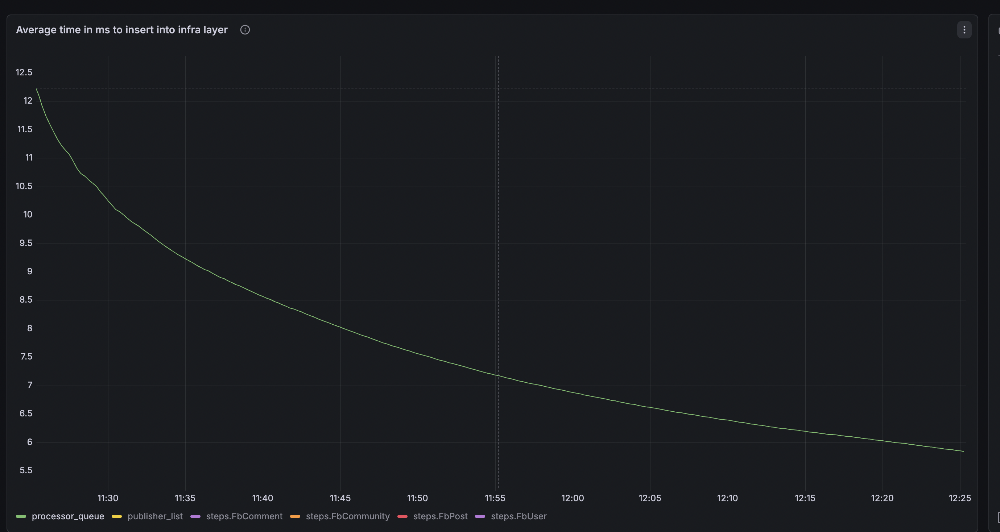
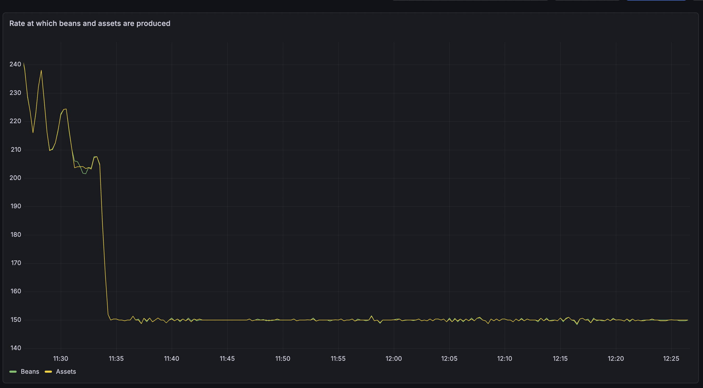

Title
Adding infra layer of file based database so that we remove databases like mongodb.
Abstract
Currently, Hagrid's infra layer has two types 1. persistent 2. inmemory
For discovery based connectors, developers need to use persistent infra layer i.e Mongodb. So for any developer who want to use Hagrid to develop discovery based connectors need to have mongodb set up along with it.
Mongodb set up should be highly scalable due to high writes and reads otherwise infra issues could come up.
We have faced the similar problems with Freshworks platform team where they need to add secondary replica for read preferences.
Adding a secondary replica in Mongodb add a problem where at some point in time
1. Hagrid status goes successful
2. data has not been replicated from primary to secondary mongo instances
3. Main thread when consumes assets then it says all consumed ( from secondary replica) , even though not complete data is replicated in publisher_list from primary to secondary mongo instance
So if we notice, along with Hagrid development, developers need maintaince of Mongodb as well.
We can avoid this work by replacing Mongodb with some other file based database which can store upto '100GB' of data In this process, I have figure out a database named nitrite db which can suit our usecase. In this DSR, we can going to detail out how to integrate nitrite database into Hagrid infra layer.
Table of Contents
- Title
- Abstract
- Table of Contents
- Introduction
- Goals and Requirements
- Proposed Specification
- Use Cases
- Design Overview
- Detailed Design
- Compatibility
- Impact
- Performance Impact
- Alternatives
- Testing
- Reference Implementation
- Contributors
- Schedule
- Appendices
Introduction
Currently, Hagrid's infra layer has two types 1. persistent 2. inmemory
For discovery based connectors, developers need to use persistent infra layer i.e Mongodb. So for any developer who want to use Hagrid to develop discovery based connectors need to have mongodb set up along with it.
Mongodb set up should be highly scalable due to high writes and reads otherwise infra issues could come up.
We have faced the similar problems with Freshworks platform team where they need to add secondary replica for read preferences.
Adding a secondary replica in Mongodb add a problem where at some point in time
1. Hagrid status goes successful
2. data has not been replicated from primary to secondary mongo instances
3. Main thread when consumes assets then it says all consumed ( from secondary replica) , even though not complete data is replicated in publisher_list from primary to secondary mongo instance
Due to this, developers are missing some assets which are not yet published in secondary due to database lag.
So if we notice, along with Hagrid development, developers need maintaince of Mongodb as well.
In this DSR, I would like to add another infra type nitrite which is a file based no sql database. This database can potentially be the replacement of mongodb for discovery based connectors
We had earlier attempted to have file based database system using H2 database however it does not work due to following issues
-
Hagrid demands creation and deletion of tables at run time. However due to
H2ACIDnature, creating and deleting tables causing delays and eventually thread exceptions -
Whenever thread is interrupted ( due to reason like hagrid shutdown ) and it is making a connection to database file via
FileChannel NIO APIthen if this thread hasinterruptenabled , it throwsMVStoreException
With this version of file based database nitriteDB we will make sure that we resolved these threading issues and provide clear implementation.
Goals and Requirements
- Onboard file based no sql database like
nitriteDB - Performance of the Hagrid should be increase or atleast no impact
- Validating if
nitrireDBcan be used inorchestrationbased connectors as well. NitriteDBworks well in conditions when threads are interrupted
Proposed Specification
Below are the technical specifications
Technical Specification
- Implement
nitriteDBService - Implement
nitriteDBList - Implement
nitriteDbQueue - Implement
nitriteDBKeyValue - Make changes in
InfraBeanConfigurationservice to create instance ofnitriteDB - Introduce a new
infra typeinhagrid.ymlnamednitriteDBwhich will indicate that customer want to usenitriteDB
Use Cases
Usecase of discovery based connector
If customer is developing a discovery based connector and want to use nitriteDb then he can mention as such in hagrid.yml
infra:
infra_type: "nitrite"
nitrite_data_path: "/Users/aaggarwal/Documents/hagrid-releases/hagrid-oss/hagrid-oss/database"
nitrite_database_type: "file"
- Above
infra_typemeans that customer want to usenitritedb. nitrite_data_pathis the path of the directory wherenitriteDBshould create its database filesnitrite_database_typefilemeaning that customer want to usefile baseddatabase.
Usecase of orchestration based connector
If a customer is develiping a orchestration based connector and want to use nitriteDB then he can mention as such in hagrid.yml
If key nitrite_database_type is not present then Hagrid by default assume that customer want to create inmemory database
Design Overview
Below is the high level design overview that we are going to follow
1. Implement NitriteService in the similar fashion as we have implemented mongoDB or H2
2. Implement NitriteDbList in the similar fashion as we have implemented in mongoDBList or H2List
3. Implement NitriteDbQueue in the similar fashion as we have implemented in mongoDbQueue or H2Queue
4. Implement NitriteKeyValue in the similar fashion as we have implemented in mongodbKeyValue or H2KeyValue
When we are implementing we are assuming one change that Hagrid should make across infra. That change is developer will always save json string into the Infra . To save array of json strings infra already provide List<String> methods.
Current Status
Currently, all methods of infra accept String as parameter to save into the database. Internally in put methods ( methods which save the data ) save the string as it is.
We are looking to change this behaviour to make it manadatory that the string that is being saved must be json string
Required Status
With the implementation of nitriteDB, I will assume that all strings that are being saved into Hagrid are of the json type
This change give us the ability to use the database functionality itself to search / filter / group by assets. This way, we can remove the need to freshIndex that we have created separately.
Detailed Design
I am proposing to have two flavour of nitriteDb used in Hagrid
1. persistent version which works on the top of RockDB
2. inmemory version which works with inmemory database
Customer can use any of the flavour of nitriteDB based on whether connector is being developed for discovery usecase or action based use case
Here is how hagrid.yml may look like in both cases
For file based use case where your connector will run heavy discovery job
infra:
infra_type: "nitrite"
nitrite_data_path: "/Users/aaggarwal/Documents/hagrid-releases/hagrid-oss/hagrid-oss/database"
nitrite_database_type: "file"
For file based use case where your connector will take lots of actions on third-party
Earlier Attempts with H2 database
Before using nitriteDb, we have tried with H2DB, however we faced problems where h2db was not scaling due to its acid properties and it is build on the top of MVStore.
- Global Locking and DDL commands are resource intensive in
H2DB- The nature of database, Hagrid needs is where it can executesDDLcommands at scale. AsH2Dbis based onMVStore, meaning higher consistency hence when usingH2DBinreal-time connectoror even sometime indiscovery based connectors,H2Dbwas throwingMVStoreException. - Interrupted Thread Problem in H2 - In Hagrid, customer can terminate sync at any point in time. Hagrid terminate sync by nterrupting all the threads that it is running. Now when a interrupt flag of a thread is ON and if at that point of time that thread is doing any
H2DBoperation thenH2DBraise multiple cascading exceptions (like close the db itself) instead of silently refusing or executing the command.
Resolving it with Nitrite DB
I am proposing these two problems by implementing nitriteDB in Hagrid. NitriteDb circumvent these two problems as below
1. As Nitrite DB is noSQL database and along using it with RockDB file module, executing DDL commands in nitriteDb is faster and lighter than any sql based database.
2. As I am using nitriteDb on the top of RockDB - NitriteDB connects with Rockdb (written in C ) using JNI ( java native interface ) , when a thread is interrupted in java then it does not affect or matter to RockDB. Hence an operation is performed as it.
Hence using nitriteDb along with RockDB is right solution for Hagrid.
Caveat with NitriteDB
One caveat with NitriteDb I have found is that if any exception occur in RockDB module then JVM crashses as this exception is outside of JVM as RockDB is connected with nitriteDB using JNI instead of regular java classes.
I saw the problem of jvm crash is happening then I am performing any operation on nitriteDb when it is closed.
So to mitigate this problem, before performing any action on nitriteDb I am checking whether it is open or not.
Compatibility
- Including
nitriteDBas another driver will keep Hagrid compatible with4.x.x. - However, I have added one condition that if a customer is saving any data in the
infraQueueorinfraListthen it must be of the formjsonlike{"name", "amit"} - In future version, we will make it mandatory to save only
jsonbased string in the infra layer.
Impact
Following will be the impacts
1. Impact on Hagrid where I need to add nitriteDb driver in infra layer
2. Impact on hagrid.yml to add another type of driver
3. Impact on documentation to give documentation on how to use nitriteDB
Performance Impact
- With
nitriteDbI have seen very good performance even in theprocessor_queue. Like withmongodb, we used to haveaverage ms to insertupto 300 - 500 ms, withnitritedbit is always less than100ms

- Rate of creation of
beansandassetsare almost equal

Alternatives
Earlier, I have tried alternatives like H2Db for which I have given the issues that I have faced.
Testing
Plans for testing the specification.
- Test if it can store large volume of data
- Yes It is working well for large volume of data -
- Check if value column has hold documents upto 1 MB
- Yes it is tested with document size upto 8MB .. Db do not throw any error.
- Check if db works well in case of orchestration use case
- Yes I have tested it and it works really well
- Check if sync shutdown abruptly then db behaves properly.
- Yes it works well. I tested it during
durabilitytesting
Reference Implementation
You can find the reference documentation here at - https://github.com/freshworks-oss/hagrid-oss/tree/dsr/44/feature
Contributors
List of individuals and organizations involved in the proposals.
- Amit Aggarwal
- github - 0xvoila
- email - amit.aggarwal85@gmail.com
Schedule
Timeline for the development and release of the specification.
I am planning to release it after I am doing with testing when document size is large. This is basically to test for test cases like confluence connector, share point connectors etc.
Appendices
Additional information, such as glossary, references, or related documents.